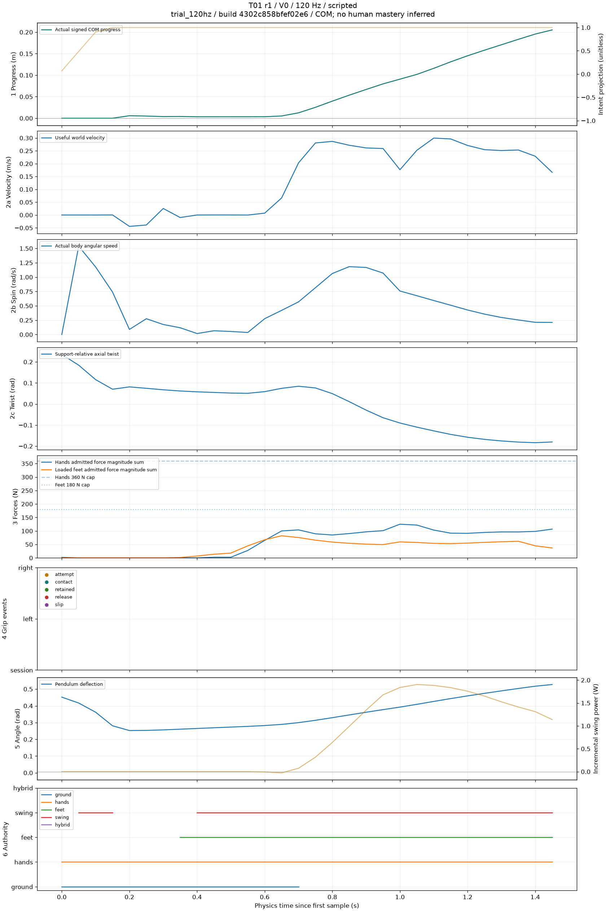
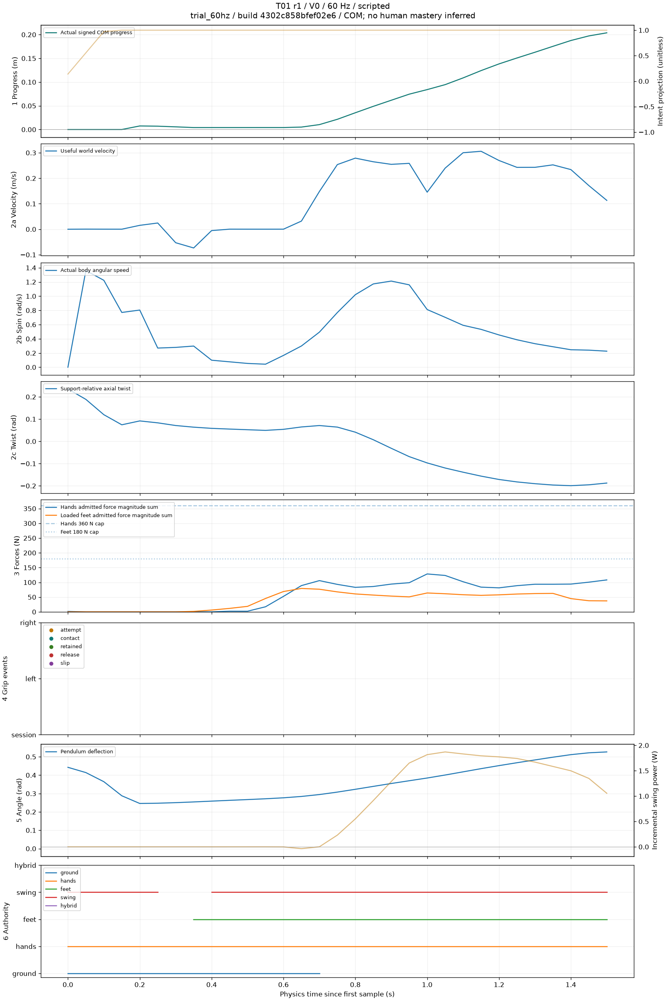

Raw per-attempt evidence. Scripted success does not establish human mastery. Force work excludes ground and torque work. Swing power is incremental, not total system energy. Missing values remain missing; no hidden combined score.
| source | scenario | variant | physics_hz | completed | useful_progress_m | directional_efficiency |
|---|---|---|---|---|---|---|
| scripted | T01 | V0 | 120 | True | 0.207685232162476 | 0.382493411577473 |
| scripted | T01 | V0 | 60 | True | 0.203809499740601 | 0.367708946436411 |
4302c858bfef02e6a6ead50b96401788953350494ce4e2f55482c22736dccf44

4302c858bfef02e6a6ead50b96401788953350494ce4e2f55482c22736dccf44
